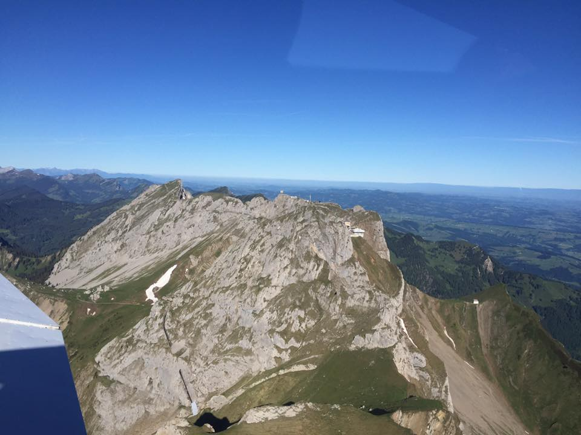
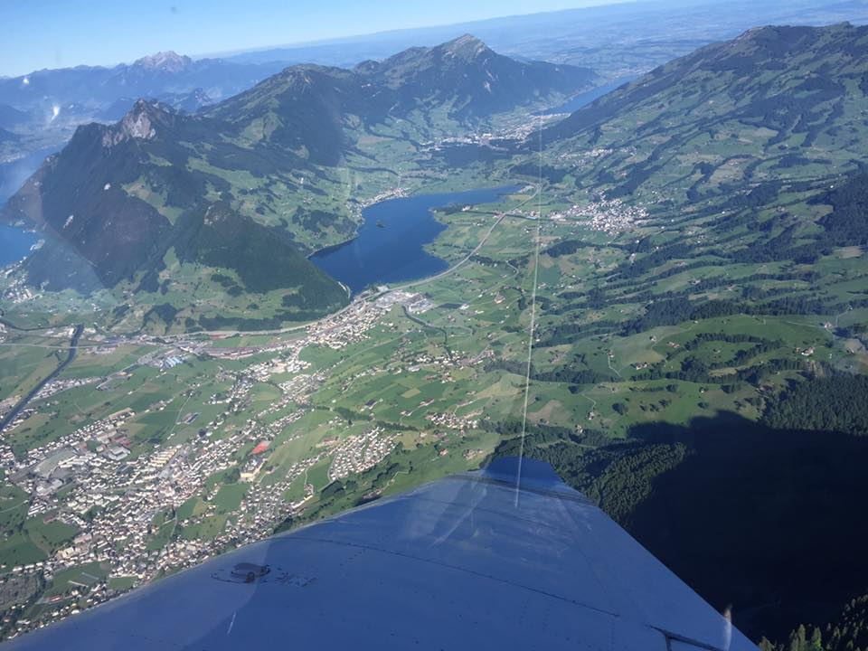

Flying with Klaus
Preparation
- Please be on time (as agreed). The plane is reserved only for a specific block of time and there are certain constraints that might mean we can't go flying at all should you arrive late.
- Remember to go to the toilet before we depart (I will try to remind you of this, but should I forget — you have been warned 😉)
- Send Klaus a list of the passengers and their approximate weights (don't lie) preferably a week or more in advance. He needs this to calculate take-off and landing distances, which are influenced by the total weight of the plane. Don't bring heavy things you don't need in the plane.
Things to bring
- Camera / video camera / GoPro / etc.
- Something to drink / snack (there is no restaurant at the airport — the on-board stewardess has unfortunately resigned due to bad working conditions, she said)
- Not so tall people should consider bringing a pillow they can sit on — especially when sitting in the co-pilot's seat up front
Where to fly
- We can go anywhere (almost) — the choice is yours and the sky is the limit 🙂. Just give Klaus a list of places (preferably with GPS coordinates) you would like to see from above: your house, work, childhood memories, a favourite hiking or skiing area, or anything you imagine would look cool from above.
- We don't have to plan up front — we can also make it up as we go, and change our minds once in the air.
- However, some places lie within regulated airspaces (like most of Zürich city). If we want to fly over those, I will have to file a flight plan at least 24 hours before.
- Some standard routes I have flown many times (click the map to see details):
- Red: Zug – Rigi – Luzern – Pilatus – Bürgenstock – Lake Lucerne – Brunnen/Schwyz – Kleiner & Grosser Mythen – Einsiedeln – Lake Zürich (30–45 min)
- Green: Zug – Rigi – Luzern – Pilatus – Sarnen – Interlaken – Eiger, Mönch, Jungfrau / Jungfraujoch – Aletsch Glacier – Engelberg/Titlis – Kleiner & Grosser Mythen – Einsiedeln – Lake Zürich (~1h15)
- Blue: Zug – Rigi – Luzern – Pilatus – Sarnen – Interlaken – Eiger, Mönch, Jungfrau / Jungfraujoch – Aletsch Glacier – Zermatt – Matterhorn – Italy – Locarno (possibly with landing, lunch, coffee, and/or ice cream) – Gotthard – Disentis – Kleiner & Grosser Mythen – Einsiedeln – Lake Zürich (~2h30)
- Black: Flying to Gruyère in the morning and spending time there to see the castle, the famous cheese dairy and/or the Cailler chocolate factory (all within ~45 min by foot or 5 min by taxi from the airstrip). Passing by Interlaken and Eiger, Mönch & Jungfrau on the way.
How to get to the airport
- Please note that some navigation systems might guide you to the wrong (north) side of the airport. Study the map first and make sure you arrive on the southern side of the runway.
- There is a "Do not enter" sign at the turn-off from the main road (about halfway between Rifferswil and Kappel am Albis) towards the airport — ignore this and continue to the parking at the airport.
Interesting webcams along some of my routes
- Airport Hausen am Albis (where we fly from)
- Uetliberg
- Rigi
- Rütliwiese
- Pilatus
- Luzern
- Horw
- Jungfraujoch
- Matterhorn
- Grimsel
- Fürenalp / Engelberg
- Andermatt: Gütsch
- Mythen
- Gruyère
Frequently Asked Questions
- Is this your own plane? — No. I'm a member of a club where plane owners make their aircraft available for rental.
- Does it cost extra to land somewhere halfway? — No. There is a landing fee, but I (Klaus) pay that. While the plane is on the ground it doesn't cost anything — you only pay for time in the air.
- What kind of plane? — A low-winged American-built Piper Archer II, seating the pilot and three passengers; registration HB-PGM.
- What is the price per passenger? — The more passengers, the lower the price per person. 1 passenger: CHF 330/h (5.50/min); 2 passengers: CHF 165/person/h (2.75/min); 3 passengers: CHF 110/person/h (1.85/min) — or about CHF 55 for the shortest possible flight of 30 minutes. For Switzerland, that's quite reasonable for a 4-seater. Note that the front passenger seat is slightly better (more view), so that person could pay a little extra: say CHF 2.00/min for the front seat and CHF 1.75/min each for the rear seats.
- Is the pilot also paying for the plane rental? — Yes. CHF 330/h isn't the full price. Add yearly club fees, landing fees, license and medical fees, maps, apps, weather subscriptions, etc. The real total is probably closer to CHF 400–450/h.
- You want my weight, but I'm not comfortable sharing that. — There is no way around it. For safety reasons and by law I have to do a weight & balance calculation. I won't share your weight with others. The maximum the passengers may weigh together is approx. 260 kg.
- How can we best prepare? — Have a think about who sits in front before you arrive, so we don't spend the first 10 minutes on the tarmac debating it 😄. The front seat has slightly better views.
- What influence does the weather have? — Weather is everything! Sometimes the decision is easy (perfect day or clearly impossible). Often it's somewhere in between, and we may have to improvise or postpone. I'm only certified for VFR (Visual Flight Rules), meaning I may not fly through clouds.
- When do we decide whether we go or not? — Depending on the weather, sometimes already a day or two before, but generally on the day itself. Even once airborne, circumstances might require us to turn back. Safety first — forecasts are just that.
Pictures and videos of previous flights






Also on YouTube.
Last updated: March 2026